|
 THE RISING SEA DRAGON IN ASIA - 2006 UPDATE By Jeff Head - Last Update: January 26, 2013 |
 |
              
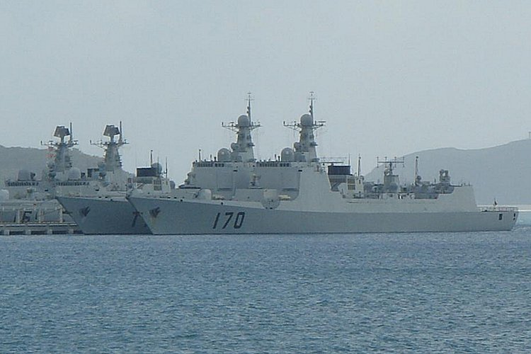 Throughout 2005 and 2006 the People's Liberation Army Navy (PLAN) has continued its unprecedented modernization and buildup, working on and procuring twelve seperate classes of major combatants. Increasing numbers of new guided missile destroyers, guided missile frigates, fast attack craft, very modern and quiet diesel/electric attack submarines, nuclear attack submarines, nuclear ballistic missile submarines, logisitic support craft, amphibious assault craft, and the infrastructure and aircraft to support them are being built. The PLAN has now settled on several classes of vessels to be built in serial production after several years of testing and evaluation of initial production runs of two each of those vessels. Pictures paint a thousand words, so pictures of each area of interest and concern are included, accompanied by a brief explanation:
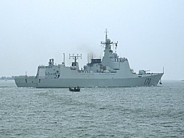 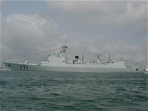 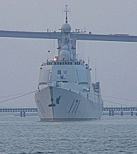 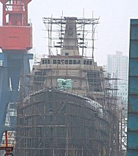 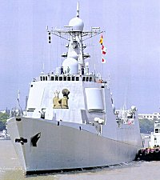 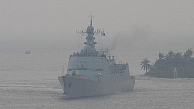 The two Type 52C Lanzhou, perhaps a third, Aegis-like guided-missile destroyers are in service. An improved version is under construction with eight projected.
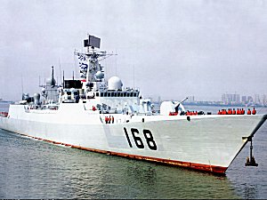 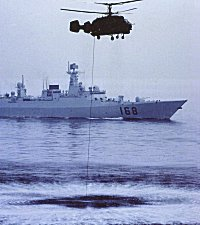 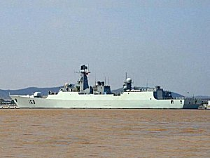 The two Type 52B Guangzhou, multi-role guided-missile destroyers are in service.
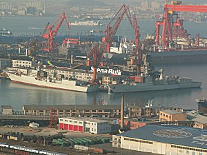 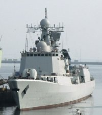 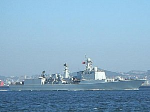 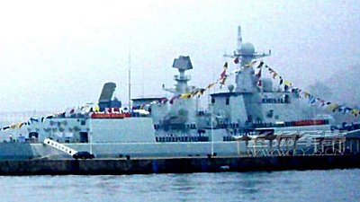 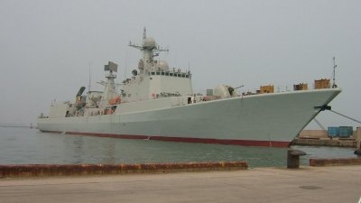 Two new Type 51C, Shenyang, area-air defense guided-missile destroyers have been built and launched.
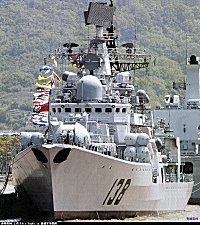 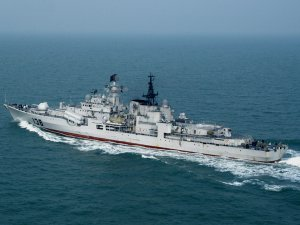 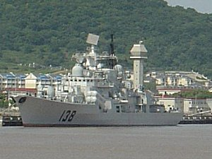 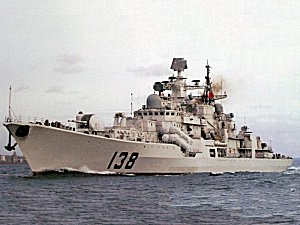 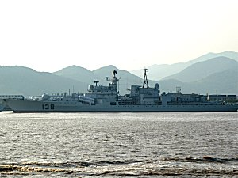 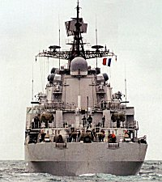 Two new Project 956, Hangzhou guided-missile destroyers been delivered to the PLAN, bringng to four the number of these carrier hunters in service.
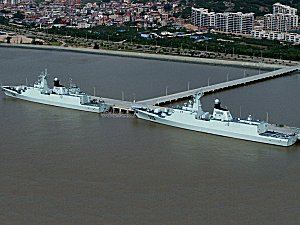 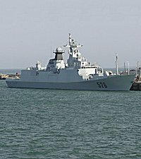 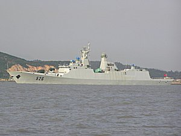 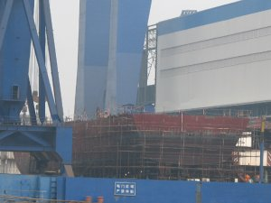 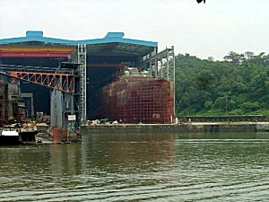 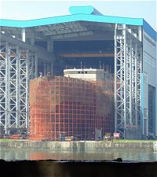 The two modern, stealthy Type 054, Ma'anshan, guided-missile frigates are in service. An improved version is under construction, with twenty projected.
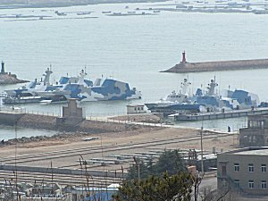 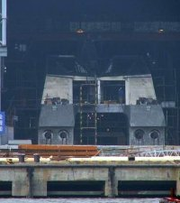 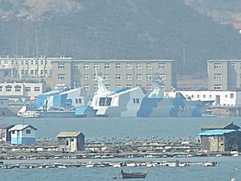 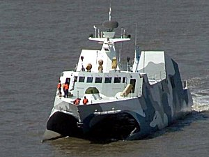 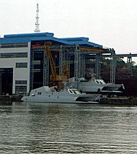 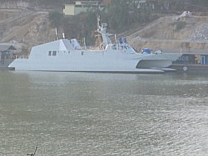 The first four Type 22 stealthy wave-piercing catamaran missile boats are in service with many more being built. Up to 15 have already been launched.
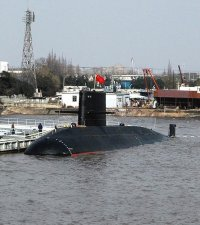 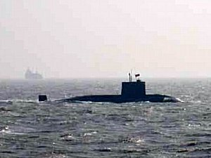 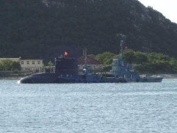 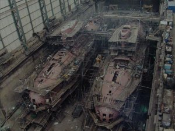 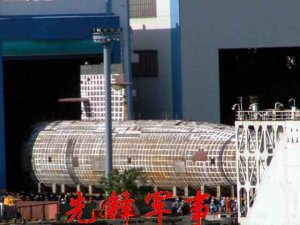 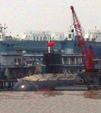 The first two Yaun, advanced diesel/electric attack submarines are in service. They are AIP capable and it is likely that more are being built.
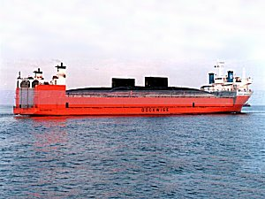 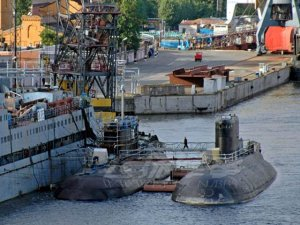 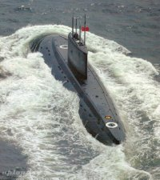 Eight more Project 636, Yuanzheng (Kilo) advanced diesel/electric attack submarines have been delivered to China. Twelve are now in service.
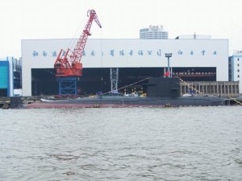 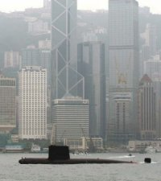 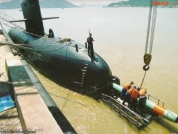 Five more Type 039, Song, diesel/electric attack sumbarines have been launched in 2005 and 2006. Twelve of these are now in service.
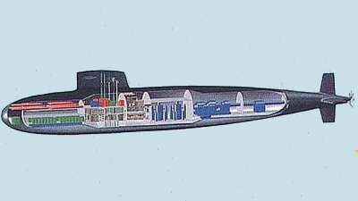 The first two Type 093 nuclear attack submarines were reportedly in service in 2006. It is specualted that more are underconstruction.
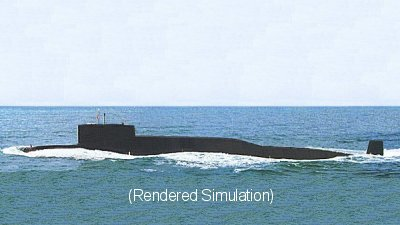 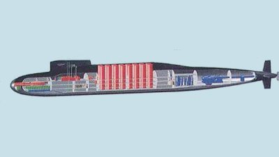 The first Type 094 nuclear ballistic submarine was reportedly in service in 2006. It carries 16 JL-2, 8,000 kilometer ballistic missiles.
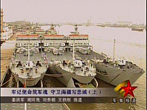 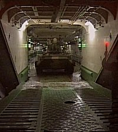 Three more Type 73-III, Yuting II, amphibious assault vessels were put in service, bringing the total to seven with more under construction.
Finally, China is building hundreds of very modern, thrid generation fighter and attack aircraft and the support aircraft (like AEW and AWACS aircraft) to go with them. Severasl of the fighters, like the J-11 (SU-27 derivitave), the SU-30, the J-10 and the JF-17 are capable of design versions that could be carrier capable. The PLAN is known to have been in recent, serious disacussion with the Russians dealing with the SU-33, the SU-27 derivitave that Russia developed for its Kuznetsov carrier, the sister ship to the Varyag. Again, as mentioned in the 2005 Update to this site, while the Chinese experience level with all of this new equipment is lacking and very much inferior to the decades and decades of practical experience the United States Navy has, there is no doubt that the Chinese are embarked on a path to challenge that experience and dominance of the U.S. Navy in the region at some point. If within range of large numbers of land-based aircraft and missiles, and if coupled with modern, capable weapons systems like the Sunburn or Yahkont missiles and perhaps supercavitiating torpedo technology, a credible threat to American naval operations in the western Pacific could be posed in the next several years. It bears watching and serious consideration. | ||
Copyright © 2005-2012 by Jeff Head
JEFFHEAD.COM Hit Counter
Jeff Head's Naval Sites Hit Counter
|